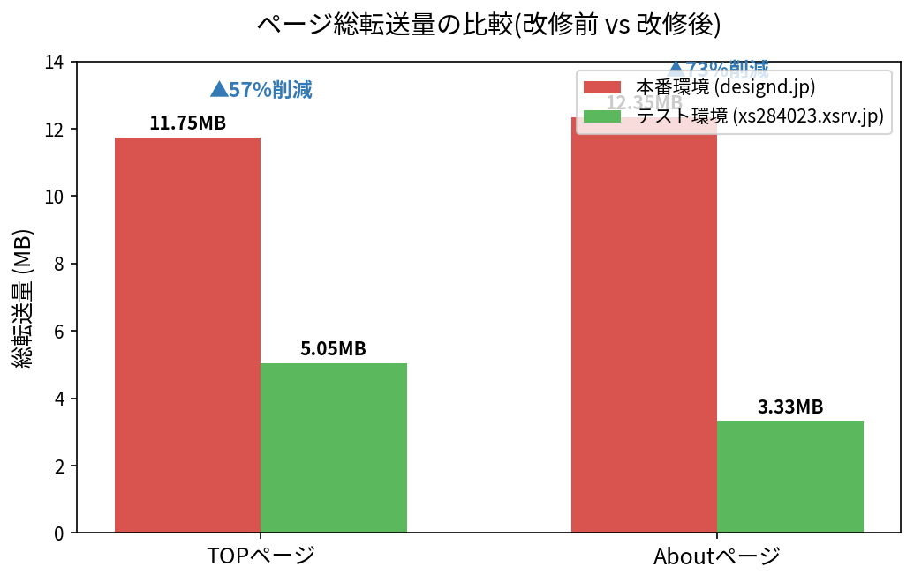
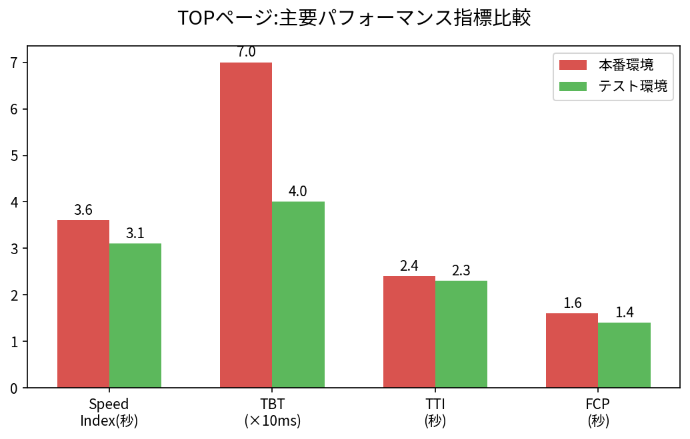
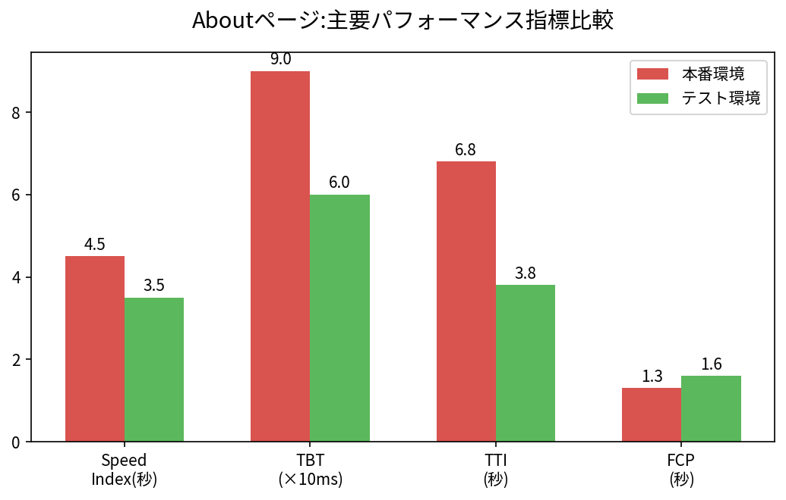
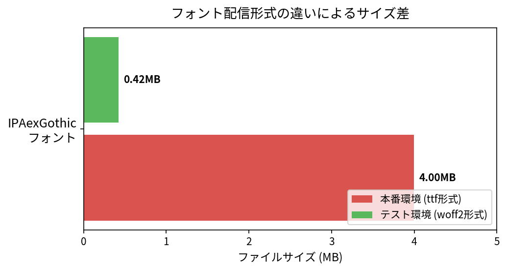
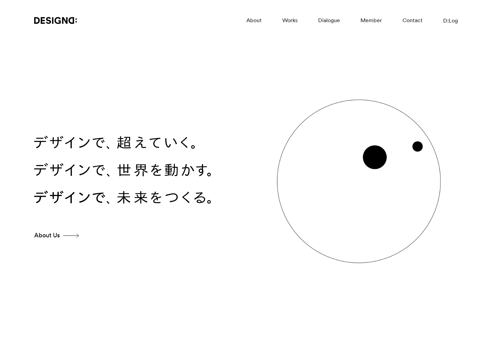
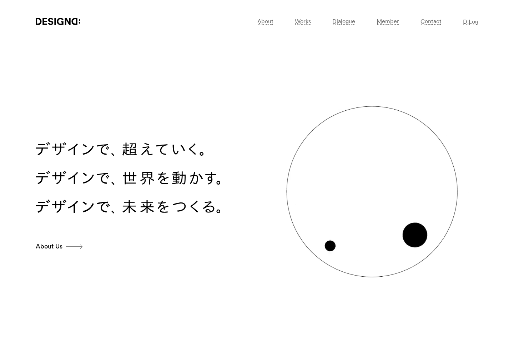
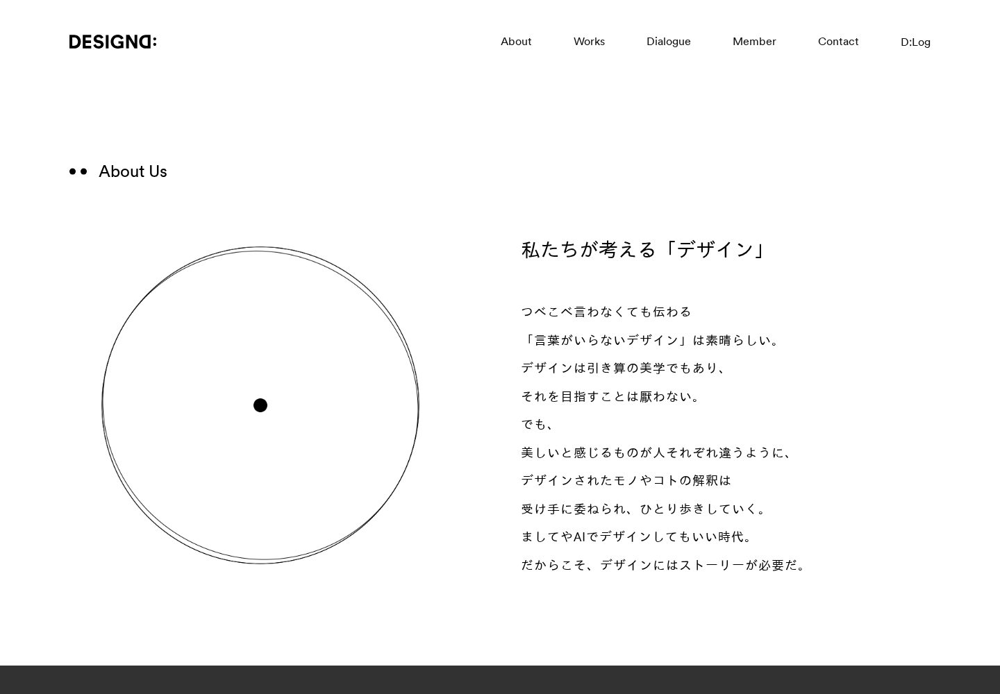
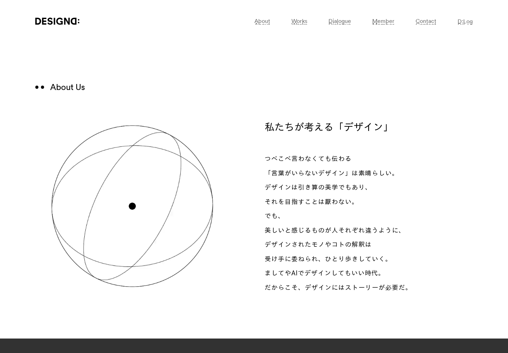

DESIGND社コーポレートサイト(https://designd.jp/)は、トップページ・Aboutページを中心に大容量の動画・画像・フォントを多用したリッチな表現を採用しているが、これに起因してページの表示速度(体感速度)が低下しているという課題があった。あわせて、過去の実装(jQueryベースのアニメーション制御)に起因するファーストビュー表示不具合(読み込みが完了しないと要素が表示されない、スクロールしないと表示されない、等)が複数報告されていた。
本改修は、上記の課題に対して以下を目的として実施した。
本改修作業は、AIコーディングエージェント 「Claude Code (Sonnet 4.5)」 を用いて、要件のヒアリングから実装・動作検証・コミット・プルリクエスト作成まで一貫して完結させた。
| 項目 | 内容 |
|---|---|
| 使用AIモデル | Claude Code (Sonnet 4.5) |
| 作業範囲 | 要件分析 → コード実装 → 構文/静的検証 → Git管理 → PR作成・更新 → 検証レポート作成 |
| 対象ブランチ | speed-improvement03 → main(Pull Request #6) |
| コミット件数 | 本ブランチ内 15件(各コミットは単一目的の粒度で分割し、日本語で詳細な理由・原因・対策を記述) |
| 検証方法 | 各コミットごとに php -l(全PHPファイル構文チェック)・node --check(全JSファイル構文チェック)を実施。加えてLighthouse計測・ソースコード差分比較・スクリーンショット比較による動作/見た目確認を実施。 |
人手による実装作業は発生しておらず、全てのコード変更はAIエージェントが生成・検証・コミットしたものである。これにより、短期間で多数の改善項目を安全かつ一貫した品質で実装することができた。
改修は3段階のフェーズに分けて実施した。以下、フェーズごとに主な作業内容を記載する。
| 動画ファイル | 改修前 | 改修後 | 削減率 |
|---|---|---|---|
| DESIGN-D_Top.mp4 | 3.21MB | 0.92MB | ▲71% |
| movie_footer.mp4 | 0.83MB | 0.54MB | ▲35% |
| DESIGN-D_about_1.mp4 | 3.66MB | 0.38MB | ▲90% |
| DESIGN-D_about_2.mp4 | 3.80MB | 0.33MB | ▲91% |
統合直後に発覚したCSS破損(文字列置換処理の不備)を検知し、postcssによる構文パース成否・中括弧/コメント数の完全一致確認を行った上で再構築・修正。
一覧ページ以外の遷移体験向上を狙いPJAX(部分差し替え)基盤の実装を試みたが、実機検証で表示崩れのリスクが大きいと判明したため方針転換し撤回。代わりに、既存の見た目・演出を変更せず「表示トリガーの安定化」と「jQuery排除」に的を絞って段階的に改修した。
本番環境(改修前の状態を保持・designd.jp)とテスト環境(改修後の最新コード・xs284023.xsrv.jp)に対して、Google Lighthouse(Desktopプリセット・パフォーマンスカテゴリ)およびcurlによる生のネットワーク計測を実施し、定量的に比較した。

| ページ | 本番環境(改修前) | テスト環境(改修後) | 削減率 | リクエスト数(本番→テスト) |
|---|---|---|---|---|
| TOP | 11.75 MB | 5.05 MB | ▲57% | 61件 → 56件 |
| About | 12.35 MB | 3.33 MB | ▲73% | 74件 → 71件 |


| 指標 | 本番 TOP | テスト TOP | 本番 About | テスト About |
|---|---|---|---|---|
| Lighthouseスコア | 80点 | 81点 | 69点 | 67点 |
| FCP(初回描画) | 1.6秒 | 1.4秒 | 1.3秒 | 1.6秒 |
| LCP(最大コンテンツ描画) | 1.6秒 | 1.8秒 | 3.2秒 | 3.8秒 |
| Speed Index | 3.6秒 | 3.1秒 | 4.5秒 | 3.5秒 |
| TBT(合計ブロッキング時間) | 70ms | 40ms | 90ms | 60ms |
| CLS(レイアウトシフト) | 0 | 0 | 0 | 0 |
| TTI(操作可能になるまで) | 2.4秒 | 2.3秒 | 6.8秒 | 3.8秒 |
| サーバー応答時間 | 350ms | 330ms | 360ms | 320ms |

総転送量削減の最大の要因は、日本語フォント「IPAexGothic」の配信形式の違いであった。
| 環境 | 配信形式 | ファイルサイズ |
|---|---|---|
| 本番環境(改修前) | TTF形式 | 4.19 MB |
| テスト環境(改修後) | WOFF2形式(圧縮・サブセット化済) | 441 KB |
ブラウザは@font-faceのsrcリストに記述された形式を先頭から順に採用する仕様があり、本番環境では非効率にもTTF形式が先頭に記述されていたため、全ページで毎回4.2MBのフォントを読み込んでいた。改修では、使用頻度の高い常用漢字・かな・記号に絞ったサブセット版を作成した上で、srcの記述順序をWOFF2優先に修正し、軽量なフォントが確実に採用されるようにした。これにより1ページあたり約3.75MBの転送量削減を実現している。
| 本番環境 | テスト環境 | |
|---|---|---|
| 平均応答時間(Total Time) | 0.992秒 | 0.947秒 |
| 平均TTFB | 0.792秒 | 0.788秒 |
サーバー応答速度(インフラ・バックエンド処理時間)自体は両環境でほぼ同等であり、計測誤差の範囲内。今回の速度改善効果は、サーバーインフラの差ではなくフロントエンド配信リソースの最適化によるものであることが確認された。
改修はあくまで裏側の実装最適化(配信形式・読み込み順序・コード構造)であり、ユーザーに見える最終的な表示内容を一切変更しないことを前提として実施した。この前提が守られていることを検証するため、以下2つの独立した方法で本番環境とテスト環境の視覚的差分調査を実施した。


※レイアウト・配色・文言・画像配置に差異なし


※レイアウト・配色・文言・画像配置に差異なし(本調査ではページ全体のフルスクリーンショットも取得し、同様に差異がないことを確認済み)
ピクセル差分検出アルゴリズムにより、見た目上の差分候補が複数箇所検出されたが、個別に詳細検証した結果、いずれも実際の表示差ではないことを確認した。
| 候補差分 | 検証結果 |
|---|---|
| ナビゲーションのホバー時の文字の滲み | 両サイトに存在する同一のtext-shadowアニメーションを、異なるタイミングでキャプチャしたことによる見た目の差。両サイト単独で再キャプチャし、同一のアニメーションが同様に発生することを確認(アニメーションのタイミング差であり実差ではない)。 |
| 見出しの文字フェードイン中の途中表示 | 1文字ずつ時間差でフェードインするtxt_split演出のキャプチャタイミングの差。コード自体(common.js)は両環境で完全に一致していることをソース比較で確認済み。 |
| ヒーローエリアの背景動画(パララックス)の見た目 | 動画再生中の異なるフレームを捉えたことによる違い。動画ファイル自体は軽量化(再エンコード)されているが、内容・構図は同一であることを目視確認済み。 |
| フッターロゴマークの色 | common.js内の既存仕様(ロゴの色を7色で1.75秒周期に自動で切り替えるアニメーション)により、キャプチャした瞬間の色が異なって見えただけ。該当コードは本番・テスト間で完全に一致。 |
curlで取得した生のHTML/CSS/JavaScriptを比較した結果は以下の通り。
| 比較対象 | 結果 |
|---|---|
| top.js / common.js / about.js(アニメーション・演出ロジック) | 差分はいずれも既知の改修コミット(本報告書3章に記載の内容)のみ。意図しない挙動差なし |
| logo_opening.svg / logo_mark.svg(ロゴ素材) | バイト単位で完全一致 |
| CSSルール内容(本番5ファイル vs テスト統合1ファイル) | 空白正規化比較の結果、本番のCSS内容はテスト統合後ファイルに全て含まれていることを確認(統合によるルール欠落・改変なし) |